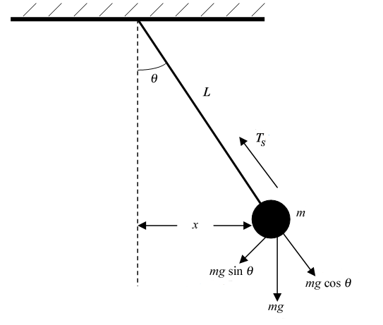

In any ideal system undergoing Simple Harmonic Motion, the total mechanical energy remains constant. This energy shifts between kinetic and potential forms, but the sum of both stays the same at every instant in time.
The total energy in SHM is the sum of the potential energy stored in the spring and the kinetic energy of the mass:
Here:
In an ideal SHM system, there is no friction, air resistance, or energy loss to heat. That means energy simply transforms between kinetic (due to motion) and potential (due to compression/stretching of the spring), but the total amount stays the same.
For a simple pendulum of length \( L \) and mass \( m \), energy conservation also applies. The total energy remains constant and is exchanged between kinetic energy and gravitational potential energy:
Where:
At the highest point, the pendulum has maximum potential energy and zero kinetic energy. At the lowest point, all energy is kinetic.
The height \( h \) of the pendulum bob above its lowest point at angle \( \theta \) is given by:
Using this, the gravitational potential energy is:
The kinetic energy, as usual, is:
So the total energy at any position is:
A plot of energy over time shows oscillation between kinetic and potential energy, while total energy remains flat and constant:
Energy conservation is a hallmark of SHM. It allows us to analyze motion using energy principles, even without solving differential equations.